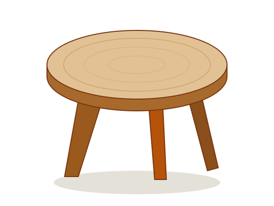
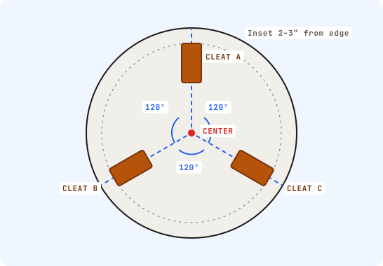
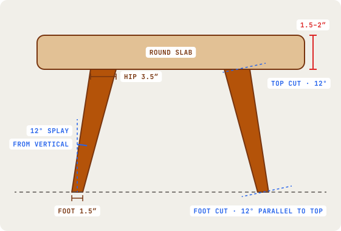

Build a tripod side table.
A round 1.5–2″ solid-wood slab on three flat, tapered board legs, set 120° apart. Plan the geometry, cut the legs safely, join them without end-grain glue and finish it to last.

Geometry, joinery & materials
Three flat legs on 120° radial lines give a stable three-point base. Each leg tapers from 3.5″ to 1.5″ and is cut with matching 12° bevels at both ends.


Tools & safety
Filter by task. Pick the tool you are comfortable with and follow its safety instructions.
Five phases. One table.
Pick a phase to see its drawing and steps. Phases are in build order.
Final checks
Tick each item before you load the table.